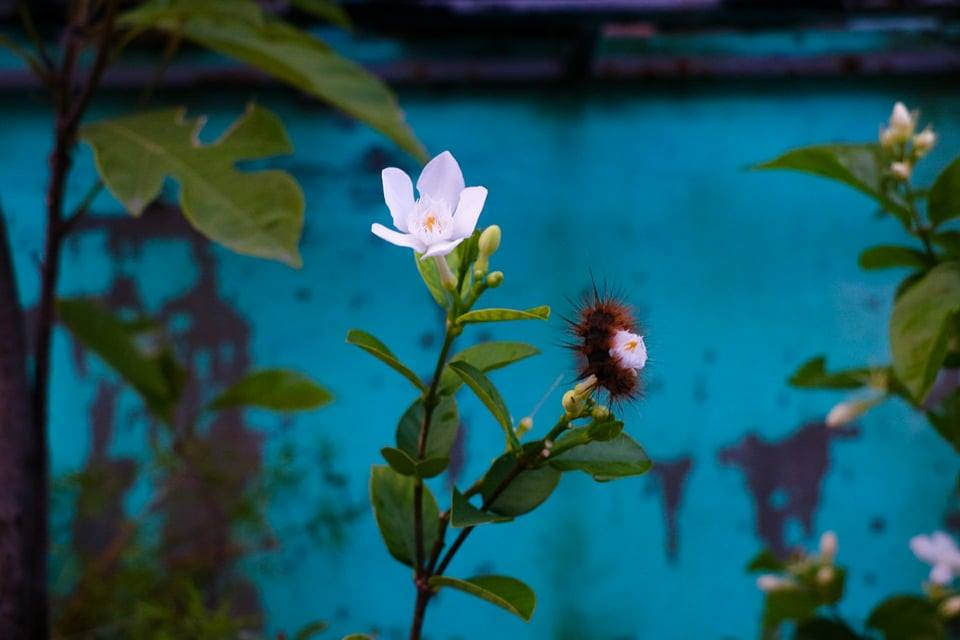
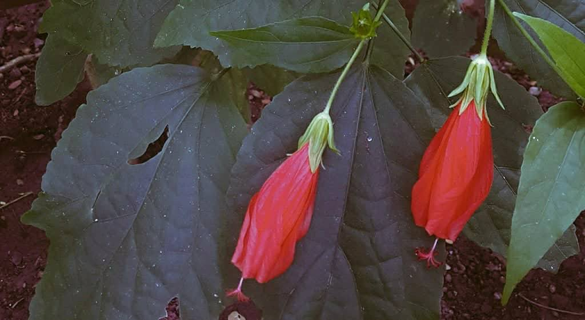
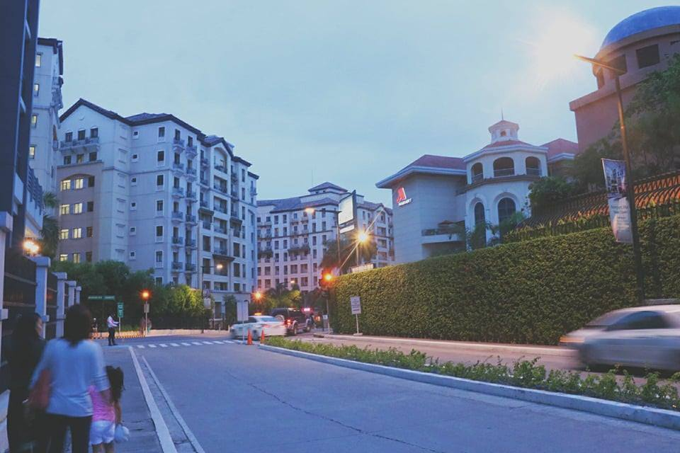
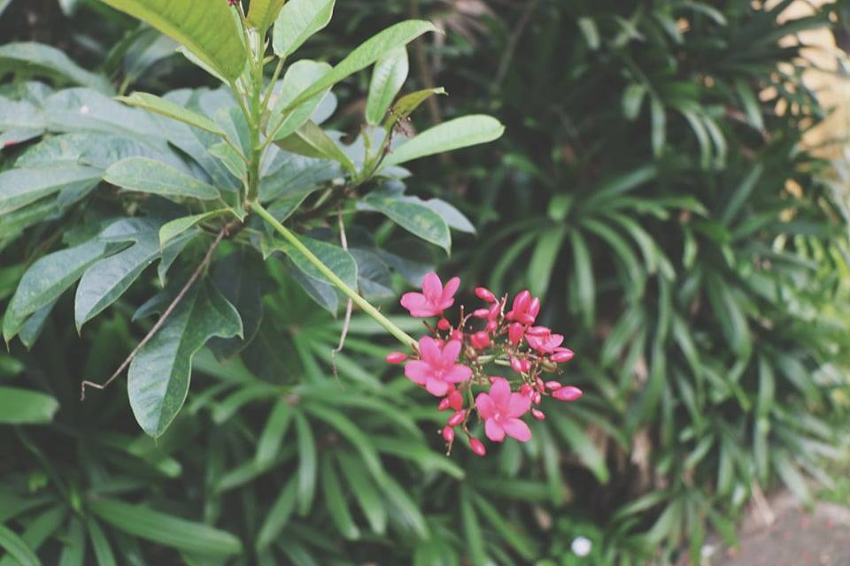
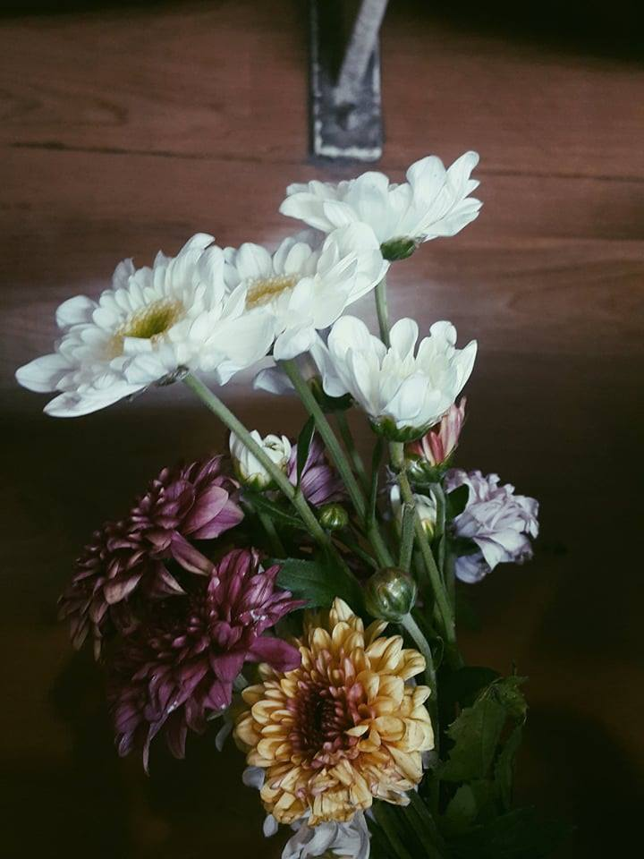
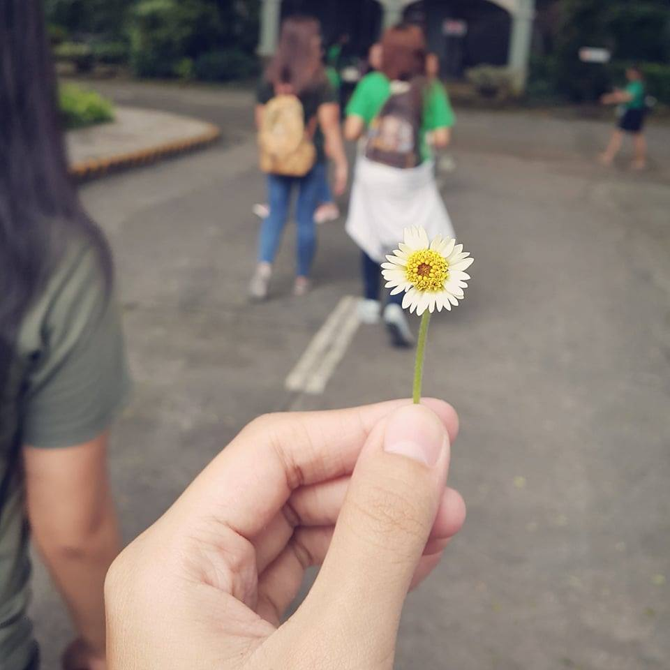
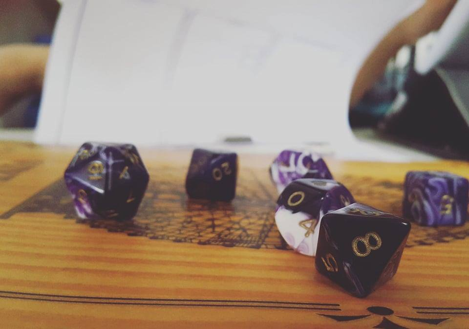
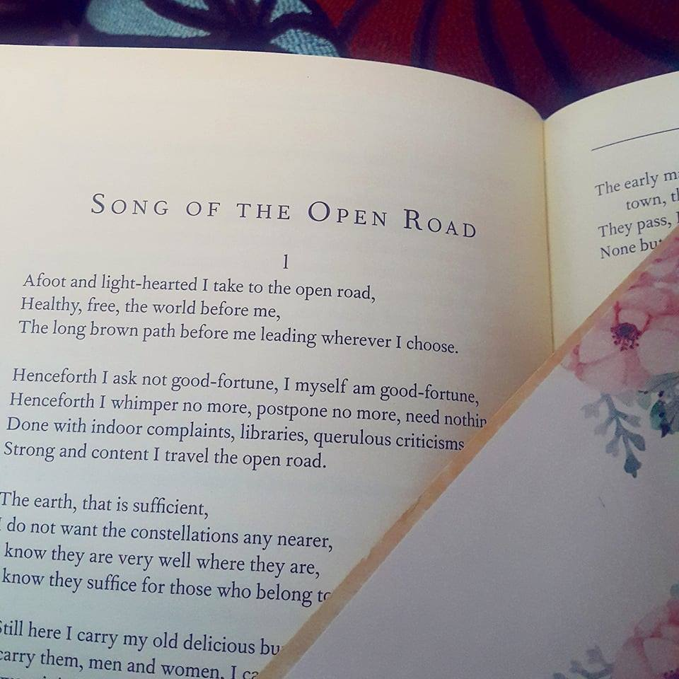

| Hola! Welcome to my site |
| Profile |
Home |
Tour |
| |
|
|
Portfolio
This is a picture I took of a flower outside our house during a storm.
Another picture from outside our house. My mother pointed them out to me after seeing these grasshoppers on a leaf.
Here's a closer look

And this is an image of a jasmine flower outside my neighbour's house.

While these are some blossoms from the botanical garden here in school.

But I also like some artificial sights like architecture.

This was taken near Resorts World Manila
But there's nothing quite like nature.

And the flowers that come with it.

I got this during a seminar here at school. Took the lot out of some vases. Haha!

Here's my favorite- a kind of weed called wild chamomile.

And a set of purple dice that our group uses when we play Dungeons and Dragons.

And a book I like.
But I must say I'm quite a sight myself hahahaha!
Back to Top
|
| This site is best viewed in Google Chrome with a resolution of 1366x768 |